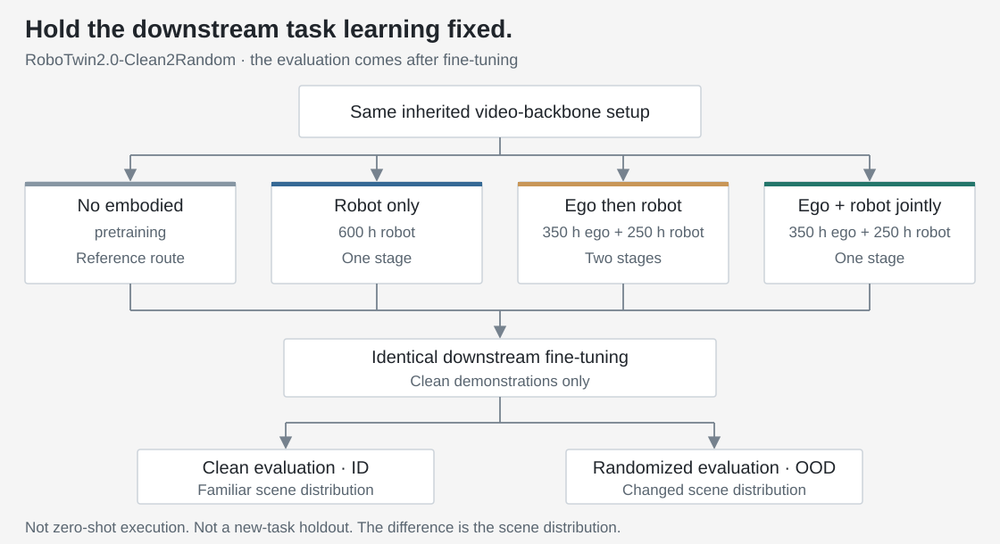
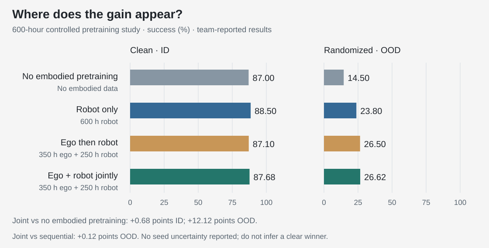
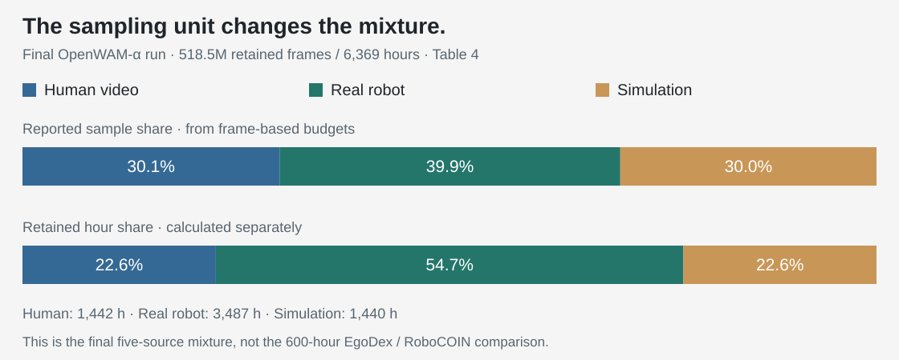

01 / The question
Separate three kinds of learning.
The architecture study asks how video and action models communicate. The representation study asks what the world model should predict. Pretraining asks whether those choices accumulate knowledge that remains useful beyond the downstream training scenes.
Three stages should not be conflated: inheriting a pretrained video model, pretraining on manipulation data, and fine-tuning on a downstream task set. In the transfer study, the inherited backbone setup is held fixed. The reference skips embodied pretraining; it does not mean that every component starts from random weights.

OpenWAM uses RoboTwin2.0-Clean2Random for this test: fine-tune on clean demonstrations, then evaluate clean scenes as in-distribution (ID) and randomized scenes as out-of-distribution (OOD). The task is still learned downstream. A separate protocol, RoboTwin2.0-Full, trains on both clean and randomized demonstrations; its randomized evaluation is therefore not the same OOD test.
The design question: which pretraining data improves the policy after the scene changes, rather than only raising a familiar-scene score?
02 / Controlled evidence
Use a fixed budget to test the mixture.
The three pretrained variants each use 600 hours. Robot-only uses 600 hours of RoboCOIN. The two mixed variants use 350 hours of EgoDex and 250 hours of RoboCOIN, either sequentially—human video followed by robot trajectories—or jointly in one stage. The paper holds the backbone, optimization budget and inference procedure fixed, followed by identical downstream fine-tuning.
What can action and video tokens read during training?
All four routes use Action Sees Video, not Mutual. Action tokens can attend to video features, including the noisy future-video tokens; video tokens cannot attend to action tokens. This is a fixed setting of the data-mixture comparison, not another variable changed between its four bars.
| Tokens doing the reading | Current observation | Noisy future video | Noisy actions |
|---|---|---|---|
| Current observation | Yes | Blocked | Blocked |
| Noisy future video | Yes | Yes | Blocked |
| Noisy actions | Yes | Yes | Yes |
The clean observation remains a read-only anchor. Future-video tokens can read one another, as can action tokens within the predicted chunk. “One-way” describes attention visibility; it does not by itself freeze the video backbone or stop action-loss gradients from reaching it. This attention mask is also distinct from the missing-label mask used in the next section.
Configuration clarification: the study lead confirmed Action Sees Video for the four-route comparison, relayed by the author on September 10, 2026. The manuscript describes the controlled protocol but does not explicitly name this fixed mask beside Figure 10.

Exact scores and matched data budgets
| Pretraining route | Ego / robot hours | Clean · ID | Randomized · OOD |
|---|---|---|---|
| No embodied pretraining | 0 / 0 | 87.00 | 14.50 |
| Robot only | 0 / 600 | 88.50 | 23.80 |
| Ego then robot | 350 / 250 | 87.10 | 26.50 |
| Ego + robot jointly | 350 / 250 | 87.68 | 26.62 |
The largest change is outside the fine-tuning distribution. Joint co-training moves OOD success from 14.50% to 26.62%, a gain of 12.12 percentage points; ID moves from 87.00% to 87.68%, only 0.68 points. Robot-only is best on ID, at 88.50%, but both mixed routes have higher OOD point estimates despite using fewer hours of robot trajectories.
This supports a complementary role for human video in this budgeted mixture. It does not isolate “visual diversity” as the causal mechanism: the sources also differ in viewpoints, tasks and other properties. Nor is there an ego-only control here that would establish how much robot data can be removed.
Co-training is a practical default, not a decisive numerical winner. Joint versus sequential differs by just 0.12 points on OOD and 0.58 on ID. Both are viable in this study. Joint training avoids an extra stage transition, which is a useful engineering reason to choose it; the small score gap alone is weak evidence of superiority.
Does pretraining also change the preferred attention mask?
Unlike the fixed-mask four-route study above, manuscript Figure 11 explicitly compares Action Sees Video with Mutual. Mutual additionally lets noisy future-video tokens read action tokens; the clean observation remains protected. The mutual-minus-one-way difference changes from −0.24 points without embodied pretraining to +0.16 on pretrained RoboTwin-Full, +0.70 on Clean2Random ID and +0.72 on OOD. The final OpenWAM-α recipe adopts Mutual; that does not retroactively make Figure 10 a Mutual experiment.
My reading is narrower than “bidirectional communication is always better”: recheck close architecture choices after pretraining. These are small differences, without reported seed uncertainty. Figure 11 is a separate comparison; its baselines must not be substituted into Figure 10. Its one-way Clean2Random scores (86.98% ID, 25.70% OOD) also differ from Figure 10’s joint route (87.68%, 26.62%); the manuscript does not establish an exact checkpoint correspondence.
03 / Implementation
Human video is useful without inventing robot actions.
Robot trajectories supervise both future visual latents and valid action coordinates. Human video supplies the visual prediction target but no robot action target. OpenWAM’s egocentric path masks action and proprioceptive channels rather than treating a human wrist pose as an executable robot command.
| Data | World target | Action / state |
|---|---|---|
| Robot trajectories | Future visual latents | Only measured, mapped and valid coordinates participate. |
| Human video | Future visual latents | No direct action loss; proprioception is unavailable and masked. |
A missing coordinate is not a zero-valued command. A padded zero must carry a validity mask. Otherwise a video-only sample would teach the policy a fabricated action. The excerpt below preserves the inspected implementation’s reduction: average over valid action cells within each sample, then average over all batch samples.
PyTorch · masked action supervision in a mixed batch
def masked_action_loss(pred, target, valid, timestep_weight):
"""pred/target/valid: [B, H, D]; timestep_weight: [B]."""
if pred.shape != target.shape or valid.shape != pred.shape:
raise ValueError("Prediction, target and validity shapes must match.")
if pred.ndim != 3 or timestep_weight.shape != pred.shape[:1]:
raise ValueError("Expected [B,H,D] values and [B] weights.")
if valid.dtype != torch.bool:
raise TypeError("valid must be a boolean mask.")
squared_error = (pred.float() - target.float()).square()
mask = valid.to(device=pred.device).float()
numerator = (squared_error * mask).sum(dim=(1, 2))
denominator = mask.sum(dim=(1, 2)).clamp_min(1)
per_sample = numerator / denominator
weight = timestep_weight.to(device=pred.device).float()
return (per_sample * weight).mean()Reduced from the inspected per-coordinate action-loss path. Here valid=True means a real target; the implementation’s action_is_pad uses the opposite convention. Inputs are finite, aligned tensors; this is not a data-cleaning function. The world loss is computed separately.
This reduction also makes the mixture part of the optimization. With one equally weighted robot example and one video-only example, the batch-averaged action term is half the robot example’s term. Renormalizing over robot examples only would be a different objective, not an interchangeable implementation detail.
The attention direction matters here. With Action Sees Video and separate stream parameters, the world loss cannot reach action-specific parameters through joint attention: the video stream never reads action features. Human video can still improve the world features that actions later read. Under Mutual, that extra read path exists, so a world loss may also update action-side parameters even without a direct action label. These are different supervision paths, not two names for the same mask.
Align semantics before aligning tensor shapes.
The final model uses an 80-D action/state contract: two 34-D arm blocks—position (3), rotation representation (6), gripper (1), dexterous hand (24)—plus 12 reserved coordinates. Unused slots are masked. A shared width does not by itself align coordinate frames, units, action timing or absolute-versus-relative commands; each source adapter must establish those meanings first.
PyTorch · explicit slot placement, not automatic action conversion
def scatter_control(native, native_valid, slots, width=80):
"""Map already-converted values into declared slots; False = missing."""
slots = tuple(slots)
if native.shape != native_valid.shape or native.shape[-1] != len(slots):
raise ValueError("Values, mask and slot list must agree.")
if native_valid.dtype != torch.bool:
raise TypeError("native_valid must be a boolean mask.")
if len(set(slots)) != len(slots) or any(s < 0 or s >= width for s in slots):
raise ValueError("Slots must be unique and inside the target width.")
output = native.new_zeros((*native.shape[:-1], width))
valid = torch.zeros_like(output, dtype=torch.bool)
output[..., list(slots)] = native
valid[..., list(slots)] = native_valid
return output, validAn educational contract example, not the final model’s full dataset adapter. slots must come from a declared source mapping. Values must already be converted to its units, reference frames and rotation convention; this function only places values and validity flags.
Source-version boundary: the inspected EgoDex/robot readers still use a legacy 20-D end-effector schema, while the manuscript’s final model is 80-D. The masking mechanics are inspectable; the exact final five-source adapter configuration is not established by that snapshot.
04 / Scaling the recipe
Choose coverage and supervision—not just more hours.
The final OpenWAM-α run expands to 518.5 million retained frames, or 6,369 hours, across five sources. It uses the team’s own egocentric collection, not the EgoDex subset from the 600-hour study. Real robots provide executable supervision; simulated robots extend manipulation coverage; human video supplies additional interaction and visual diversity.

Five-source composition and reported training settings
| Source | FPS | Frames · M | Hours | Reported share |
|---|---|---|---|---|
| Team-collected egocentric video | 30 | 155.7 | 1,442 | 30.1% |
| AgiBotWorld-Beta | 15 | 96.9 | 1,794 | 18.6% |
| RoboCOIN | 30 | 74.1 | 686 | 14.3% |
| DROID | 10 | 36.3 | 1,007 | 7.0% |
| InternData-A1 | 30 | 155.5 | 1,440 | 30.0% |
| Total | Mixed | 518.5 | 6,369 | 100.0% |
The manuscript reports 128 H200 GPUs for about seven days, global batch 3,072, 155,862 iterations and one epoch. Other reported settings include AdamW at 10−4, cosine decay with 5% warmup, bfloat16, DeepSpeed ZeRO-2, and 33-frame inputs with video stride 4 and window stride 1 (Table 9). These are the team’s run settings, not measurements reproduced for this page.
The final training setup updates the video transformer, ActionDiT and proprioception encoder, while freezing Wan’s VAE and the text encoder. Video and action noise levels are sampled independently during training; evaluation uses synchronized denoising. A frozen visual encoder does not mean a frozen video transformer.
Retained frames, sampled windows and optimizer presentations are different counts. Window construction, episode boundaries and padding determine how the frame pool becomes examples. The rounded frame totals alone do not reconstruct the precise epoch manifest.
The useful distinction is between choosing the retained pool and sampling from that pool. The paper first cleans data and selects whole episodes under per-source budgets. It then samples proportionally to the retained sample counts. This makes the retained mixture the intended training exposure; equal source weights would instead oversample some sources and undersample others.
Quality control matters to the learning target, not only storage hygiene. The reported pipeline checks visual defects across sources and checks robot signal integrity and video–signal alignment separately. One choice is especially relevant to world prediction: trim idle footage at episode boundaries, but do not splice out every pause in the middle. Joining non-adjacent frames would create artificial dynamics for the model to learn.
The larger run demonstrates that the selected recipe can be assembled at scale. It is not a controlled scaling-law result: the source mixture and downstream configurations differ from the 600-hour study. A score difference between the two cannot be attributed to hours alone.
05 / Research judgment
A larger mixture can still miss the important variation.
The final model’s LIBERO-Plus breakdown is a useful counterexample to an overly broad “pretraining solves generalization” claim. Camera perturbations reach only 33.8% and noise perturbations 39.8%, versus 97.0% under lighting perturbations; the average is 69.2% in Table 5. LIBERO-Plus evaluates the LIBERO-fine-tuned checkpoint without further fine-tuning, not a zero-shot base policy.
The paper discusses limited single-arm visual coverage and the prediction representation as possible explanations. Those are plausible hypotheses, not separately isolated causes in this comparison. I would use the failure pattern to prioritize data with relevant viewpoint and sensor variation, while testing representation robustness—not infer that a format change or more undifferentiated hours will fix it.
Measure the transfer you need.
Separate familiar scenes, scene changes and genuinely new tasks. Do not let a strong ID score stand in for all three.
Treat missing labels explicitly.
Inspect validity masks, source exposure and loss normalization together. A mixture is also an allocation of supervision.
Use failures to choose data.
Collect the missing variation and keep a matched evaluation. More total hours is not a substitute for relevant coverage.
These are the decisions I would carry into a new pretraining effort. The evidence supports mixed-source pretraining as a way to improve scene transfer in this setting; it does not establish an optimal ratio, a universal advantage of co-training, or a solved path to unseen-task autonomy.